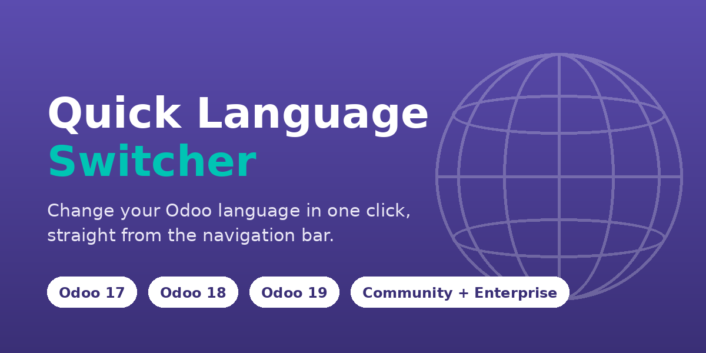
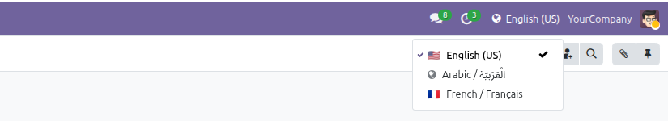
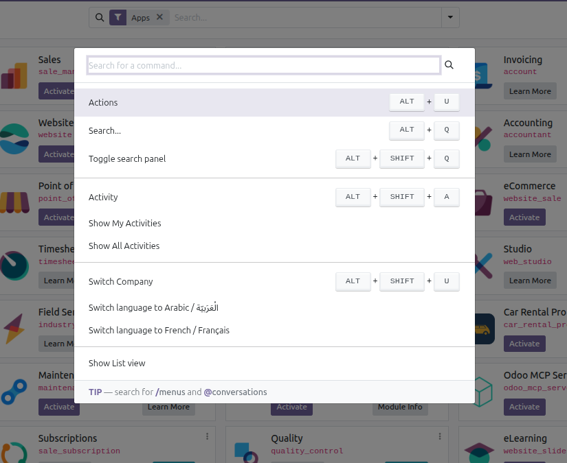

Changing the interface language normally means opening Settings → Users & Companies → Users → Preferences → Language, saving, and reloading. This module puts a globe in the top bar instead: click it, pick a language, and the back end reloads fully translated.
Every internal user can do it — no administrator rights, no technical settings, no access to the Users menu. And a user can only ever change their own language.
A globe in the systray shows the language you are on. Open it to see every installed language, with the current one marked and pinned at the top.

Flags are derived from the locale code. Languages without a country —
Arabic (ar_001) above — fall back to a neutral globe, and the
language name is always shown.
Press Ctrl+K and start typing a language name. The switcher adds its own entries to Odoo's command palette, right next to the built-in commands.

| One-click switching Pick a language and the web client reloads translated. No preferences dialog, no save button, no administrator. | Command palette Ctrl+K then a language name. The few languages you actually use are offered before you type anything. |
| You choose what is offered General Settings lets an administrator restrict the list to the languages your teams actually need. Leave it empty to offer them all. | Remembers your habits The three languages you switch to most recently are pinned near the top, so bilingual users never scroll or search. |
Nothing hardcoded
The list comes straight from your res.lang records. Install a
language and it appears; archive it and it is gone.
|
Built for long lists Above ten languages a search box appears, filtering by name or by code. The menu scrolls instead of running off the screen. |
| Right-to-left ready Arabic, Hebrew and friends work normally. The component never forces a direction and uses logical CSS only, so Odoo stays in charge. | Phone friendly Icon only on small screens, icon and language name on wide ones. The menu stays usable either way. |
The server endpoint accepts a language code and nothing else. There is no user id parameter, so it can only ever write the language of the person calling it — a user cannot change anybody else's.
The code is validated server-side against the installed, active and allowed languages before anything is stored, and the administrator restriction is enforced on write rather than merely hidden in the menu. No new access rights, no new models, no core patching, and no privilege elevation anywhere in the module.
With a single active language the switcher hides itself, because there is nothing to switch to. Uninstalling removes everything it added, including its one configuration entry.
Independent implementation built on public Odoo APIs. Bundles no third-party code or artwork; flags are Unicode characters, not images.